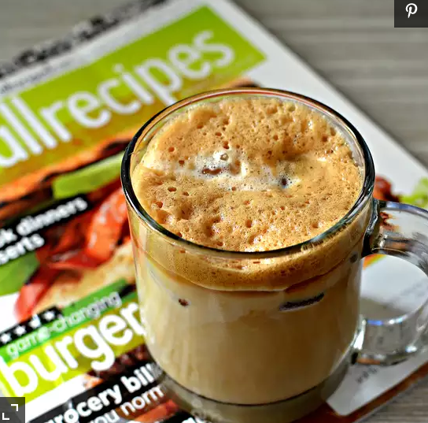

Easy Iced Coffee

Description
This is a 'cheaters' iced cappuccino! Very easy to make, and very good!
Ingredients
- 2 teaspoons instant coffee granules
- 1 teaspoon sugar
- 3 tablespoons warm water
- 1 cup ice, or as needed
- 6 fluid ounces cold milk
Steps:
- In sealable jar, combine instant coffee, sugar, and warm water.
- Cover the jar and shake until mixture is foamy.
- Pour into a glass full of ice.
- Fill the glass with milk.
- Adjust to taste if necessary.